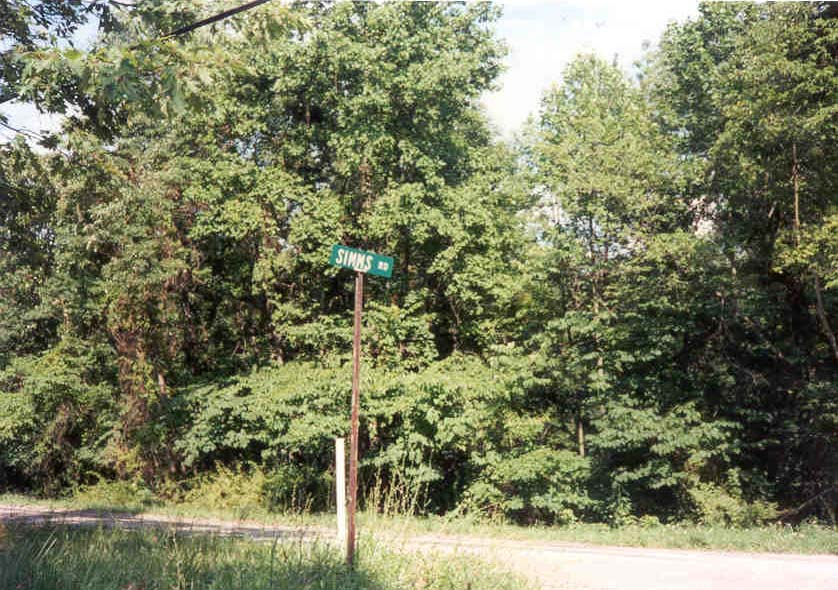

Simms Cemetery
Simms Cemetery in Athens has the distinction of being considered one of the most haunted places in the country. It is said to actually move, making it difficult to locate for the Ohio University students who regularly search for it. My friend Dan, who went to OU, says that the cemetery is located just behind another cemetery and is therefore harder to find.
Judge Simms, after whom the place is named, was--according to legend--once the judge and executioner for the area. After a sentence was given, it would be carried out at the Judge's home on Peach Ridge. Rope marks are still visible on the "hanging tree" in the cemetery.
Visitors to Simms Cemetery often report seeing strange shapes, especially the figure of Simms himself, who says two words to trespassers: "Get out!" Most people take his advice. Ghostly figures are also seen hanging from the tree on occasion.

All of this inspired me to try to search Simms Cemetery out, but as Dan predicted, it was difficult to find the place. I learned that it is located off of Peach Ridge Road, which I followed until it ended, but all I came across was a Simms Road. There was an article in the OU "Spook File" on the cemetery, and it included some pictures, so I know it exists, but I wasn't able to find it. More than one person has told me that there really is nothing left of this infamous graveyard--above ground, anyway. Destructive douchebags have broken off every tombstone in the place, and now they're scattered and lost. I suppose a couple made their way into dorm rooms and student apartments as morbid trophies. According to many people, all that's left is the vacant clearing. Can anyone help direct me there?

Back
Sources
Everett, Lawrence. Ghosts, Spirits, and Legends of Southeastern Ohio. Haverford, PA: Infinity Publishing, 2002. pp.33-36.